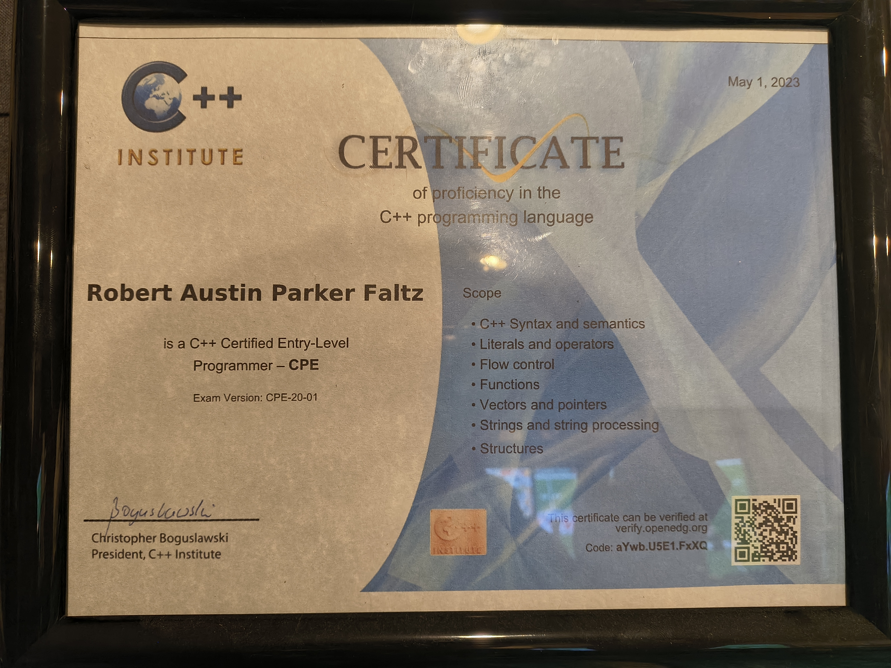
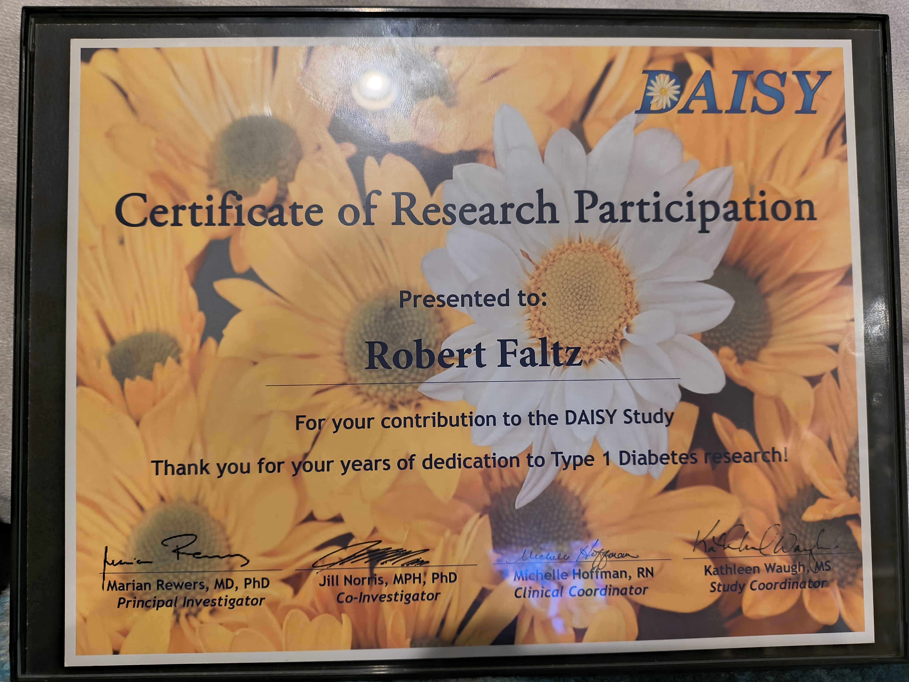

Career Goals

Education
- ASS in Game Development
- Certifited in C++
- On my way to Earn BS in Creative Technology and Design

Future Goals
- Enter into a new Job field
- Help create a product or game
- Getting a Passport

Other Accomplishments
- Donate to Diabetes Research
- Design for 2018 Winter Olypmics
- Participate in E-League events